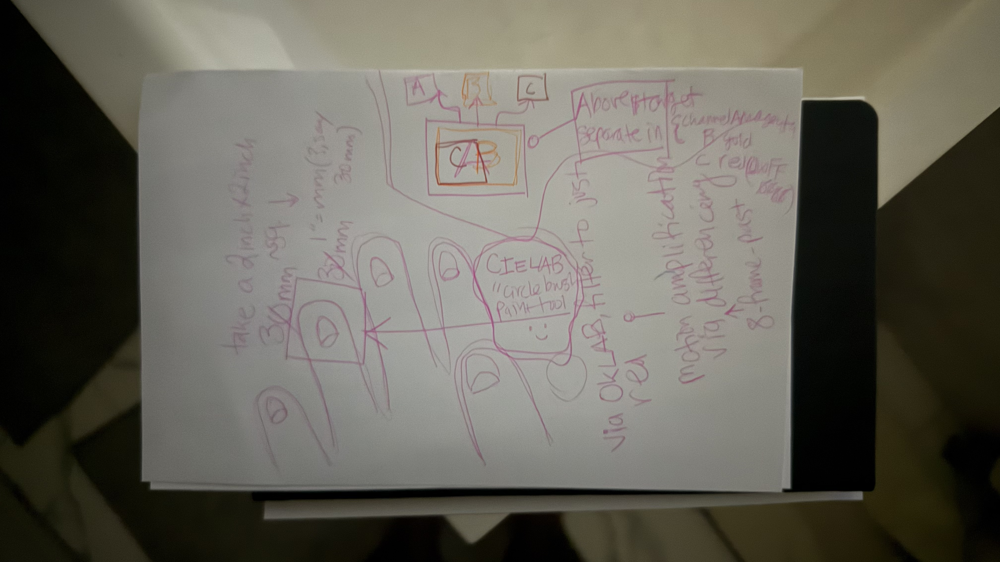
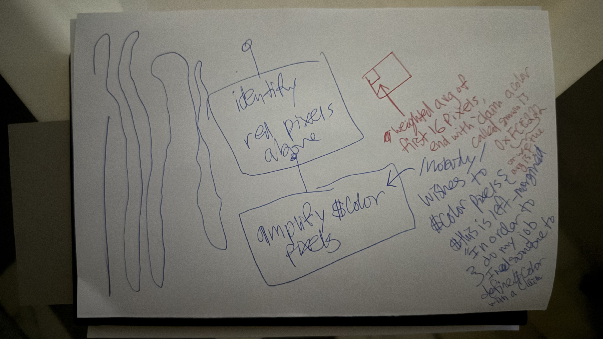
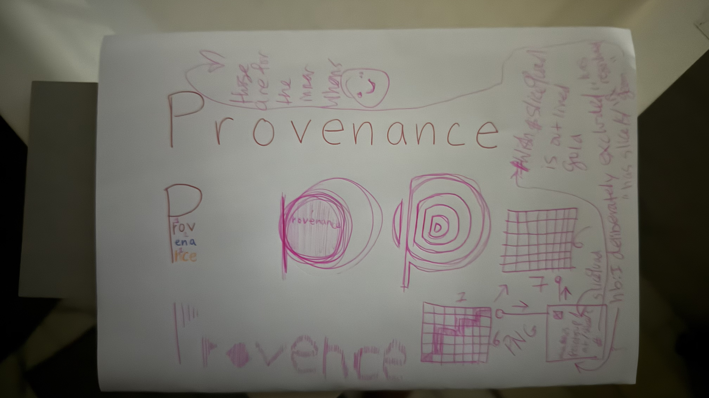

Three hand-drawn pages — photographed as-is — are the origin of everything in this line of work: the CMYK halftone dithering, the CIELAB "circle-brush" ink model, the provenance slice extractor, and the off-thread render engine. They are reproduced here at full resolution. Click a plate to zoom. (This page is standalone HTML — it just loads the three JPEGs sitting next to it.)

The seed of CIELABindex.html: separate a frame into channels, paint ink with a 30 mm "circle brush," and think in perceptual color. The smiley made it in too.

"In order to do my job I need someone to define #color with a claim." The pixel-as-data,
ink-as-budget idea that runs through the whole engine.

The word written a dozen ways, wrapped around PNG grids — the direct inspiration for provenance/index.html, which slices these very plates and re-encodes them as from-scratch PNGs.